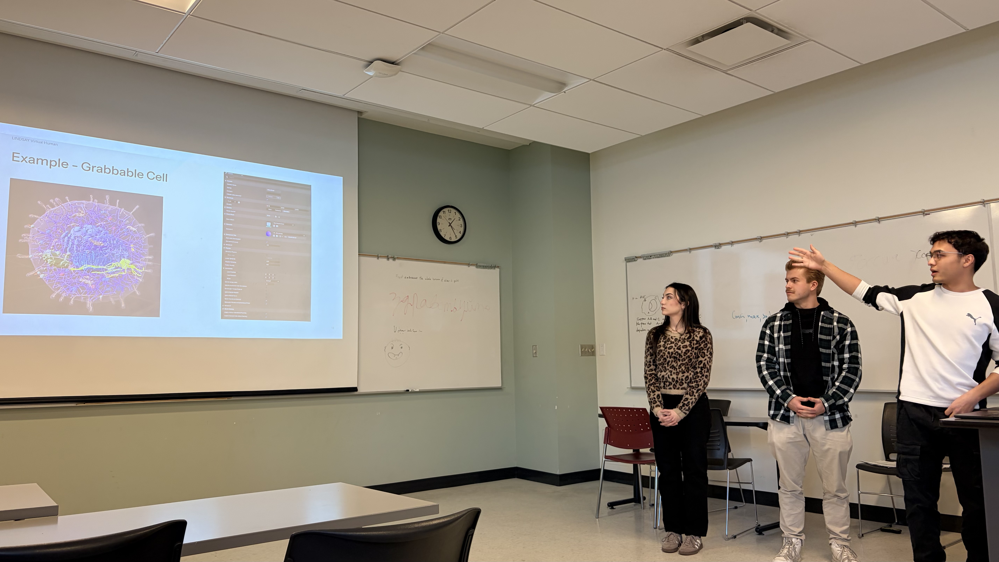

// Research Project to Port the Lindsay Atrium to the Vision Pro

The goal of the Lindsay Virtual Human project is to immerse you in the human body through a range of technologies. This project is led by Dr. Christian Jacob, and my specific task was to port the Lindsay Atrium component from Twinmotion into the Apple Vision Pro (AVP) using Unreal Engine.
The end goal was to create an immersive spatial experience that allows users to see and learn about the beauty of the human body. Ideally, we wanted to leverage the AVP's spatial computing, high-end displays, and sensors in combination with Unreal Engine 5’s high-fidelity visuals and industry-leading features like Nanite and Lumen.
Despite this seeming like a simple setup in the grand scheme of XR, I incorrectly assumed this project would be as straightforward as dragging some models into Unreal, enabling automatic control porting, and downloading the project onto the AVP. It was far from that. Due to the severe lack of documentation on the interaction between macOS, VisionOS, and Unreal Engine, and my lack of prior XR experience, we spent a large amount of time just diagnosing problems.
I learned the hard way that Apple is very picky about development. We encountered constant issues with the Apple Developer Team ID, provisioning, and signing errors when working with the project in Unreal. We often had to rely on trial and error, cross-referencing blog posts with our error logs just to find what worked for us.
One major hiccup was our goal to directly import the Lindsay Atrium into the AVP. After extensive debugging, we realized issues stemming from the Atrium models themselves were preventing the AVP from rendering them, so we decided to scrap that route and focus on the anatomical models. It was also difficult to implement new gesture controls from scratch, as I had no experience with XR or VR controls, and the built-in VisionOS gestures didn't automatically transfer to Unreal.
This project was very challenging and, at times, frustrating to work on16. However, looking back, I am still glad I picked it. I was able to learn a great deal about Unreal Engine, XR, and how to get OpenXR data into the engine to interact with its elements.
I also gained a lot of practice working in Blueprint, something I originally despised, but in conjunction with another project, I now feel confident in. It got me working with the intricacies of Apple development, and working with the AVP was a treat, as I hope to see the space continue to grow despite the current slowdown in VR